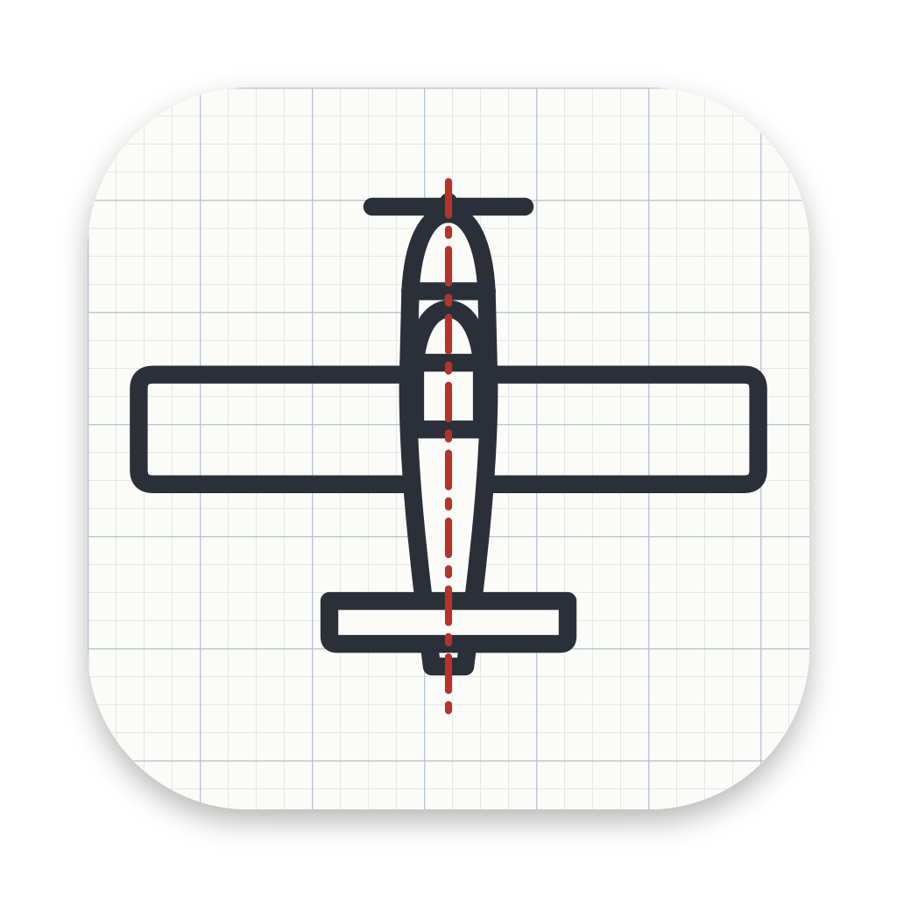
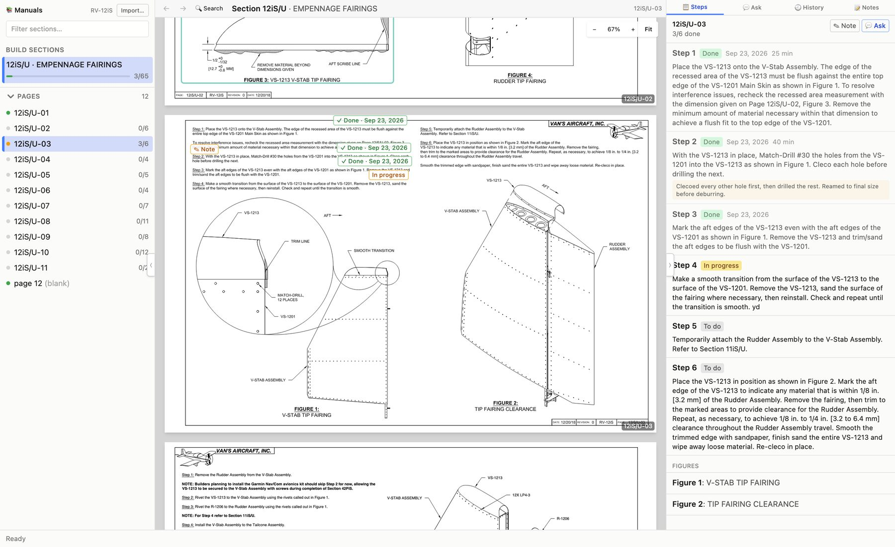
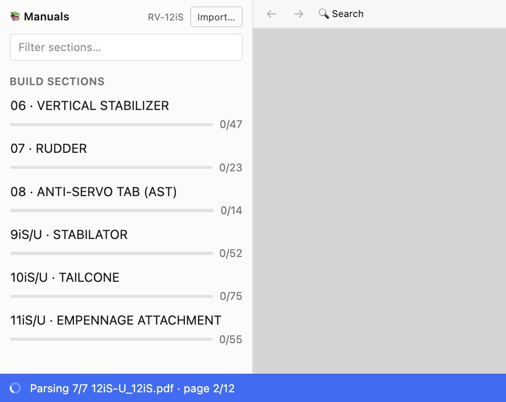
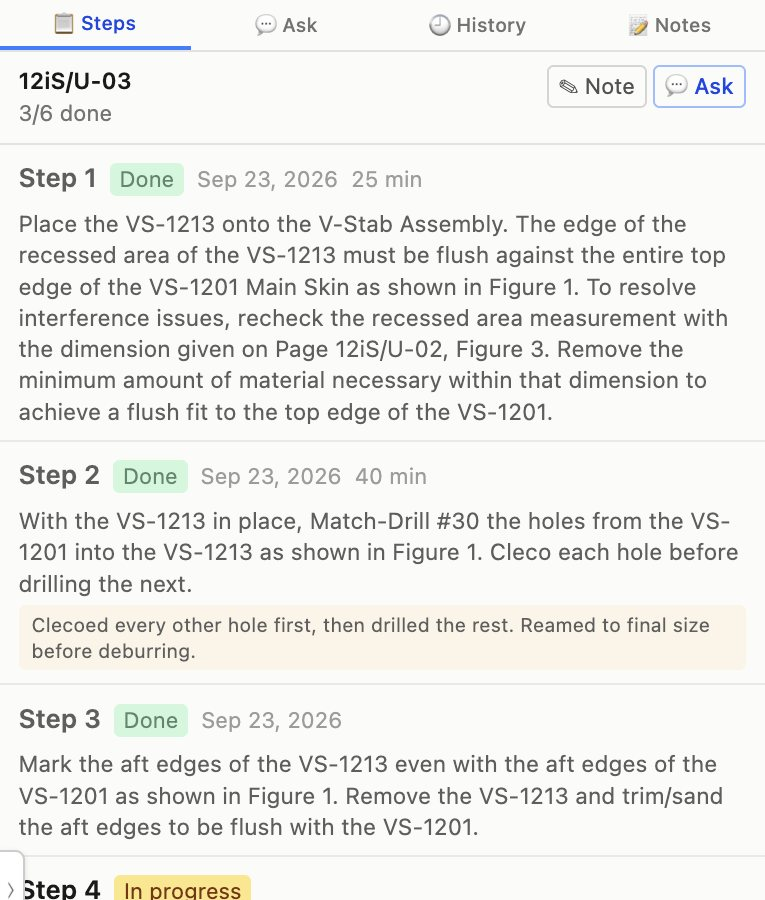
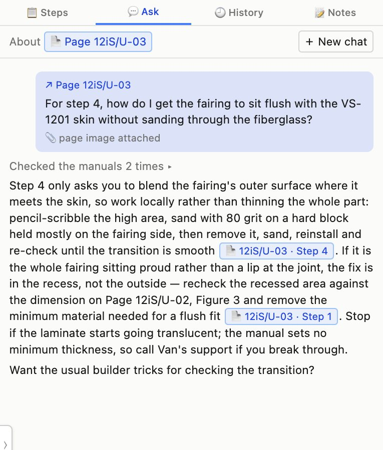
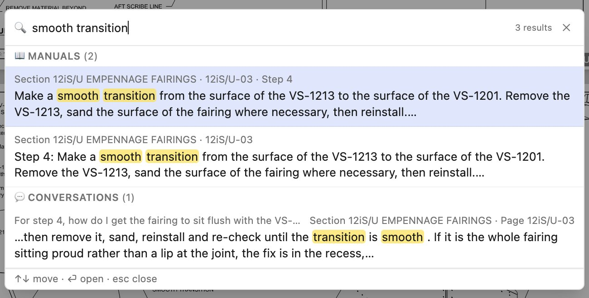

Van's Builder Assistant
For builders of Van's kit planes. Free, for Mac and Windows.
Track the build. Ask the manual.
The construction manuals with a checklist inside, notes where you need them, and answers that cite the page.
NOTE:Only the RV-12iS is supported at the moment. Support for other Van's models will be added based on interest, so say which one you are building.
Version 0.1.3, released 09/24/2026. All versions and release notes are on the releases page.

Import the manuals
Point it at the construction manual PDFs you downloaded from Van's, one file per section. Each page is read into its steps, figures and notes, so the section appears in the list with a progress bar the moment it is parsed.
When Van's publishes a new revision, import it over the old one. Your progress and notes carry across.
The manuals are not included. Van's provides them to kit owners.

Track the steps
Mark a step done, in progress or skipped, from the list or by clicking it on the drawing. The date is kept, and the time it took if you want to log it.
Notes attach to a step, a figure or a whole page, and show up right under the text they belong to.

Ask about a step or a drawing
Select a step or a figure and ask. The AI assistant searches the manuals for related steps, reads the drawings, and looks through builder sites such as VAF, the Van's site, EAA and Kitplanes. Answers cite their sources, and a citation jumps back to the exact step.
Like any AI, it can be confidently wrong. Treat an answer as a pointer, and check it against the manual page it cites and your own judgement before you drill, cut or rivet.
This part is optional and runs on your own Anthropic API key, entered in Settings. Without a key, everything else works.

Search everything
Press ⌘K on a Mac or Ctrl+K on Windows from anywhere in the app. One search box covers the manuals, your notes and your past conversations, and a hit opens the page or the thread it came from.
⌘F (Ctrl+F) finds text within the open section, including on pages Van's shipped as pure drawings.

What stays on your computer
The manuals, your progress and your notes live in a folder on your machine. Nothing is uploaded and there is no account. The only thing that leaves your computer is a question you choose to ask, which goes to Anthropic with the page it concerns.
Free for any Van's builder. Questions, bugs and requests for other models: use the contact details below.